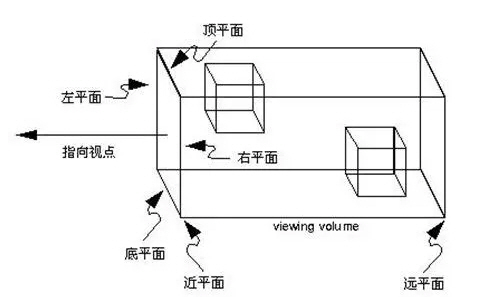
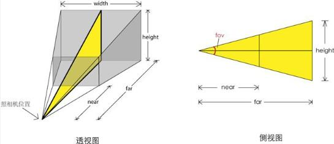
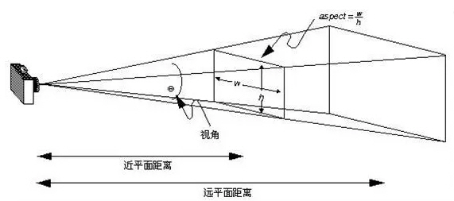

照相机 Camera
三维的场景如何显示到二维的显示屏上？
照相机Camera就是这样一个抽象，定义了三维空间到二维屏幕的投影方式
ThreeJS采用右手坐标系，Camera默认是面向Z轴负方向放置的

正交投影：OrthographicCamera(left ,right, top, bottom, near, far)

正交投影的视景体是一个长方体，可以大概认为视景体里的物体平行投影到近平面上，然后近平面上的图像被渲染到屏幕上

透视投影：PerspectiveCamera(fov, aspect, near, far)

透视投影的视景体是一个四棱台，物体近大远小，类似人眼视角，因此多数情况下都使用透视投影来展示3D效果

正交投影和透视投影的效果对比